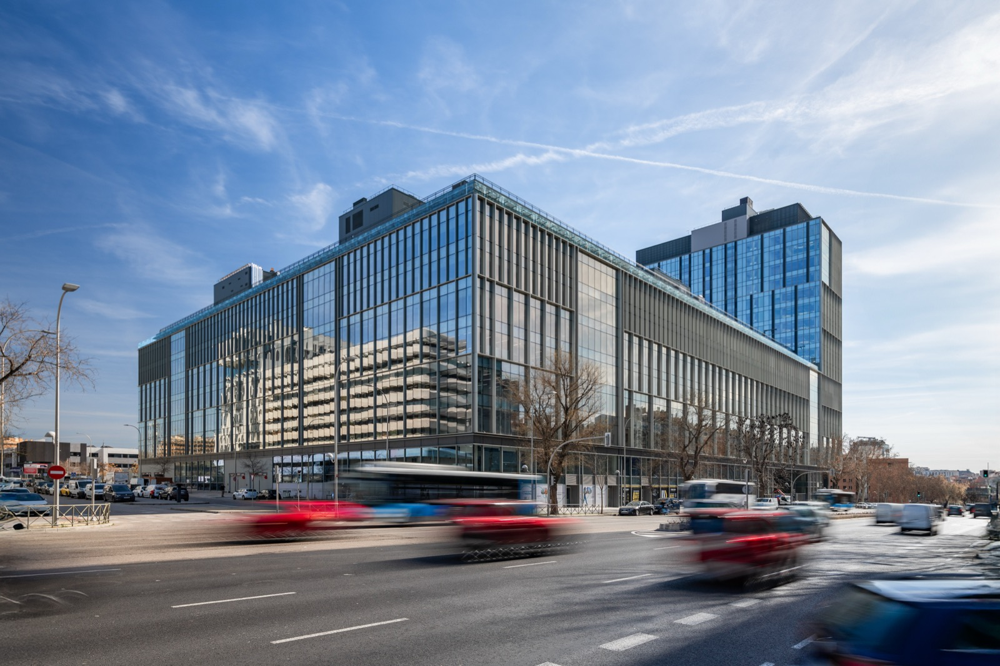
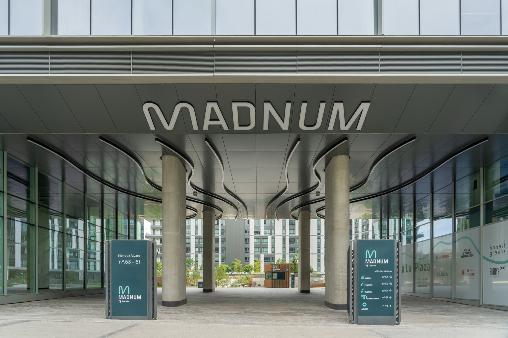

Madnum — la web de un nuevo complejo de oficinas en Madrid
Diseñar para que una empresa decida en minutos si ese espacio es el indicado — una decisión cara y a largo plazo, no una compra de un clic.
Este proyecto está bajo NDA. Lo que sigue describe el contexto público del sitio (madnum.com) y mi forma de abordar el problema — no datos internos ni decisiones de negocio confidenciales.

La fachada de Madnum sobre Méndez Álvaro — el primer vistazo que recibe quien evalúa el complejo como futura sede.
El contexto
Madnum es el nuevo desarrollo de oficinas de Colonial en Méndez Álvaro, Madrid: 90.000 m² totales, 56.000 m² de oficinas, espacios flexibles operados por Utopicus, y un fuerte eje de sostenibilidad (proyecto Net Zero Carbon).
El desafío de diseño era distinto a un producto digital tradicional: acá el "usuario" es quien decide dónde va a instalar la sede de su empresa — una decisión cara, a largo plazo, que rara vez se toma en una sola visita a la web. El sitio tenía que transmitir escala y solidez sin sonar corporativo-frío, en español e inglés por igual.
Cómo se abordó
Traducir escala en confianza, no en números sueltos
90.000 m², certificación energética, capacidad de espacios: cifras que solas no dicen nada, así que se diseñaron como datos de contexto, no como titulares.
Separar públicos sin fragmentar la marca
Una empresa buscando sede corporativa, un equipo chico buscando oficina flexible (Utopicus), y una marca de restauración evaluando un local en "La Plaza" son tres decisiones distintas — el sitio necesitaba guiar a cada uno sin sentirse tres sitios distintos.
Bilingüe de verdad, no traducido a último momento
Con paridad real entre versión en español e inglés, pensando la estructura de navegación para ambos desde el inicio, no adaptando después.
Mostrar el lugar, no solo el edificio
La Plaza, el arte público, la propuesta gastronómica y de bienestar están tan presentes como los metros cuadrados de oficina, porque la decisión también se toma por cómo se vive el día a día ahí.
Vender metros cuadrados es fácil. Vender dónde va a pasar tu día a día, mucho menos.
Resultado
56.000 m²
de oficinas de última generación.
Certificación A
en eficiencia energética.
270
personas de capacidad en el auditorio.
3 zonas
oficinas, retail y bienestar integradas en un mismo complejo.

El acceso principal conecta los cuatro edificios con La Plaza y su propuesta gastronómica — el "lugar", no solo la oficina.
Reflexión
Diseñar para un espacio físico real, no una app, me obligó a pensar distinto: acá no hay onboarding ni retención — hay una sola decisión grande, y el sitio tiene que ganarse la confianza necesaria para que alguien la tome sin haber pisado el lugar todavía.